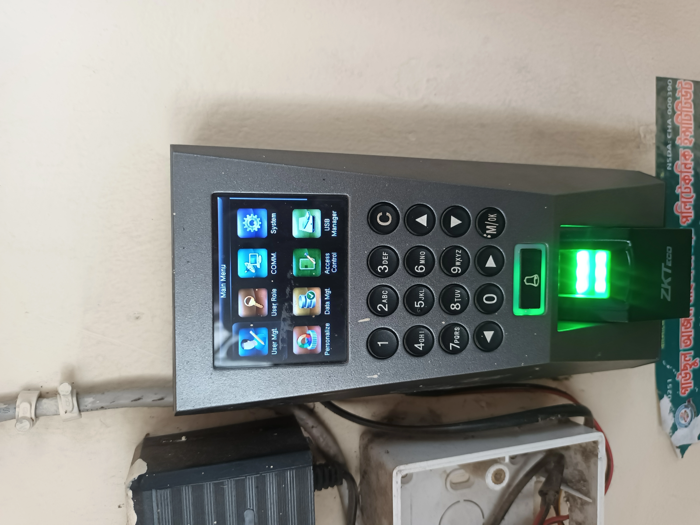
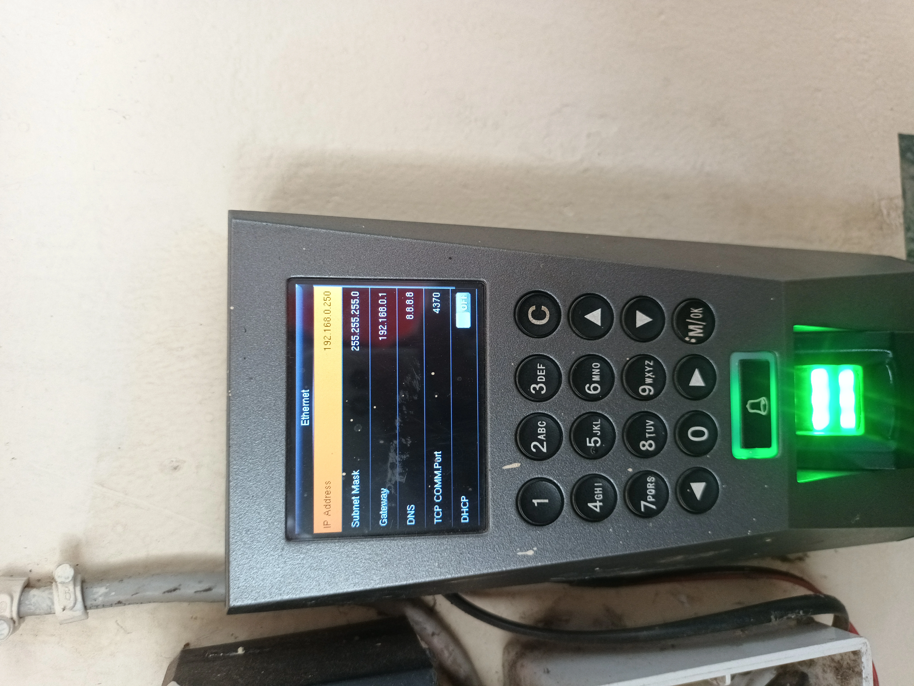
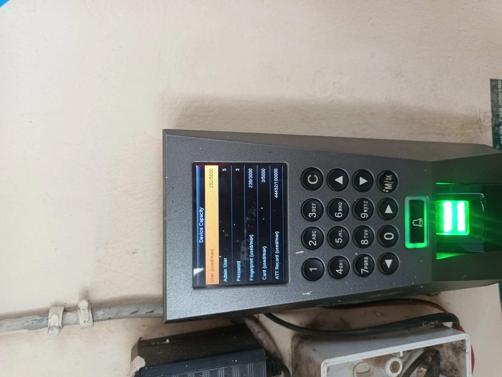
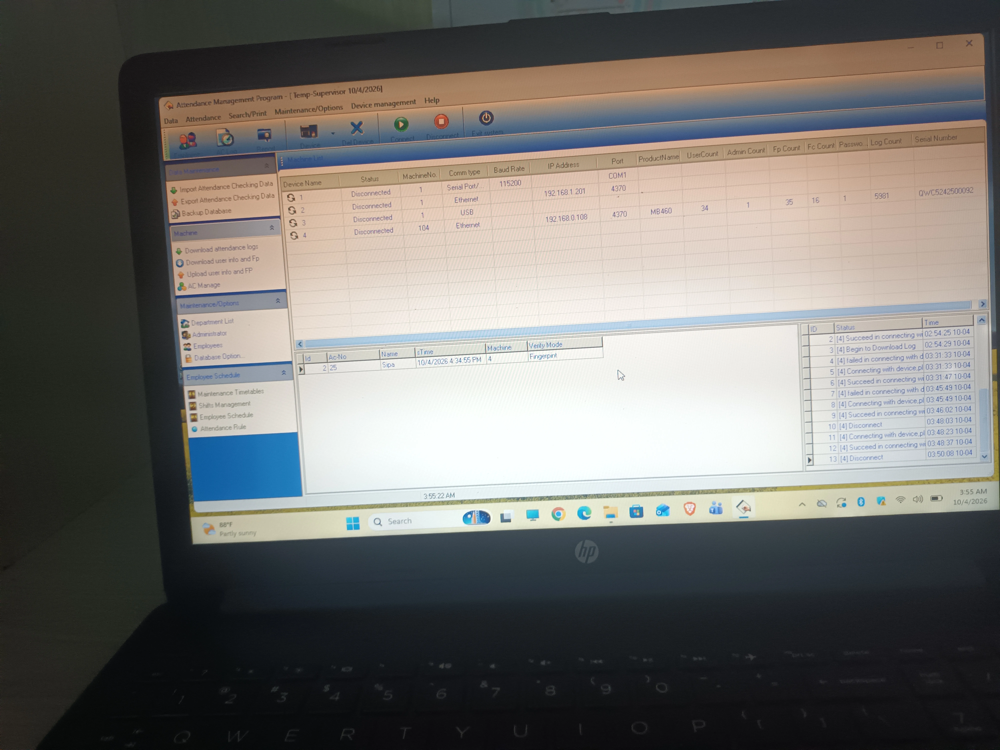
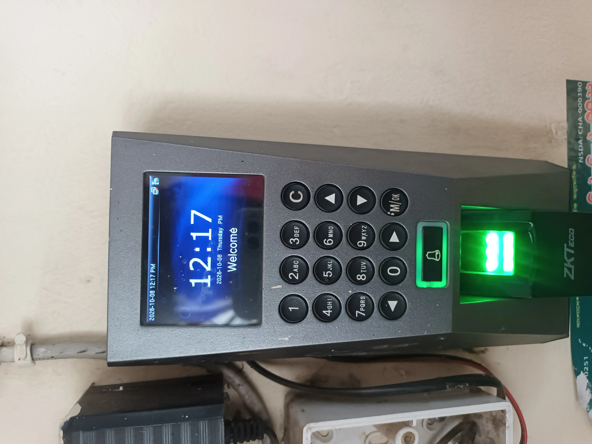

Attendance Device Installation & Automation
Gausul Azam Maizbhandari Polytechnic Institute (GAMPI)
The Challenge
Daily attendance was recorded on paper registers across multiple departments. Calculating monthly attendance required counting physical pages by hand, was prone to proxy attendance and tampering, and took hours of administrative work to compile reports for exam eligibility.
My Approach
Replaced the manual paper-based system with a centralized biometric attendance setup across campus. Selected, mounted and configured two ZKTeco terminals, integrated them into the ZKTime/ZKBio database over the LAN, and automated time synchronization to ensure accurate, tamper-proof attendance records.
Device Selection & Placement
Selected ZKTeco F18 and MB460 terminals supporting fingerprint, face recognition and RFID. Deployed separate terminals for students (main entrance) and staff/faculty (office) to prevent peak-hour bottlenecks.
Installation & Network Setup
Installed Cat6 cabling, mounted terminals securely, and assigned static IP addresses on the campus LAN (192.168.0.250 and 192.168.0.108) to ensure reliable, uninterrupted connectivity to the attendance server over TCP port 4370.
Enrollment & Database Integration
Enrolled 300+ students and 40+ staff across multiple verification methods (fingerprint, facial recognition and RFID). Integrated both terminals into the ZKTime/ZKBio database over LAN for centralized, real-time record storage.
Synchronization & Reporting Automation
Configured automated NTP time synchronization across devices, eliminated manual data entry, and enabled automated monthly attendance reporting workflows to prevent time-tampering and reduce administrative workload.
System Architecture
Attendance System Topology
2 ZKTeco Terminals · Static IP on Campus LAN · ZKTime/ZKBio Database · NTP Time Sync
Central Attendance Database (Port 4370/TCP)
Main Entrance · 192.168.0.250 · 300+
Office Entrance · 192.168.0.108 · 40+
Static IP Allocation · NTP Time Sync
Key Highlights
Multi-Modal Verification
Fingerprint, face recognition and RFID provide reliable fallback methods, reducing failed scans and improving user experience.
Separate Student & Staff Devices
Dedicated terminals prevent congestion during peak hours and keep attendance records cleanly separated.
Static IP on Campus LAN
Fixed IP addresses ensure stable, reliable connectivity with no reconnection issues after power cycles.
Automated Monthly Reporting
Real-time data sync eliminates manual compilation, prevents time-tampering and saves hours of administrative work.
Maintenance & Support
- Biometric Enrollment - Registering new students/staff and re-enrolling when templates fail to read
- Template Backup - Backing up fingerprint and face templates after enrollment batches for disaster recovery
- Time Synchronization - Monitoring and maintaining accurate NTP time sync across both terminals
- Log Export & Sync Troubleshooting - Verifying data integrity and resolving sync issues with ZKTime/ZKBio
- Firmware Updates - Keeping devices updated and maintaining user database consistency
- Preventive Maintenance - Routine cleaning of fingerprint sensors, camera lenses and RFID readers
Project Gallery





Results
Attendance for 300+ students and 40+ staff is now captured automatically and centrally. Biometric verification eliminates proxy attendance, records are available in real-time instead of being reconstructed at month-end, and monthly attendance reporting is fully automated-reducing manual work and improving accuracy.
Technology Stack
Hardware
Software
Networking & Infrastructure